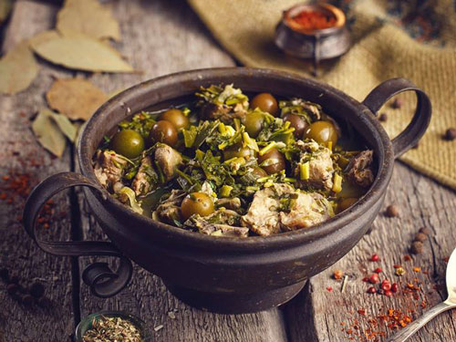

Chakapuli

Description
Chakapuli is a popular Georgian stew consisting of either beef or lamb meat, unripe sour plums, spring onions,
green peppers, white wine, and herbs and seasonings such as tarragon, coriander, garlic, and salt.
It is especially popular during spring, when the plums are still unripe.
Chakapuli is often served during the feast of Orthodox Easter, and it is recommended to serve it
hot with Georgian bread on the side.
Ingredients
- 3 kg. lamb meet
- 400 gr. tarragon
- 200 gr. green onions
- 150 gr. green pepper
- 500 gr. green plum
- 100 gr. garlic
- 750 ml. Salt to taste
Steps
- Cut a meat into small pieces.
- Finely chop tarragon, green onions, garlic, and green pepper. Mix the greens. Place in a saucepan lamb bones, top with chopped greens, and 3-4 pieces of green plump.
- Next layer is meat. Sprinkle it with salt and top with greens, again. Make that kind of layers until saucepan becomes full.
- Pour a wine into the saucepan. Place on a low heat and cook until meat becomes soft.